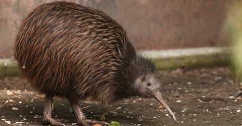
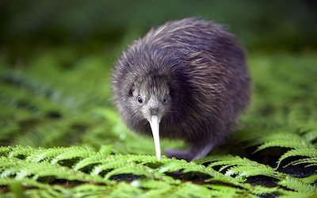

Wow! Based on your answers... You share similarities with the Kiwi (Apteryx)

The Kiwi, though small, is a brave nocturnal bird. For the most part, Kiwi's go with the flow of life, roaming around in the night looking for food (mainly worms but also woodlice, millipedes, centipedes, slugs, snails and other insects and arachnids). Whatever they can find throughout the night they will feast on, but do not take this easy going personality lightly. Kiwi's do not acquire tricks for anyone and can become aggressive and attack with its razor sharp claws when provoked, attacking anything treatening it. Like the Kiwi, you are an easy-going, brave and resourceful person who enjoys their nights much more than the morning.
Click on Ceasar to Restart!